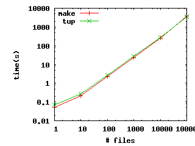
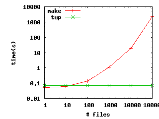
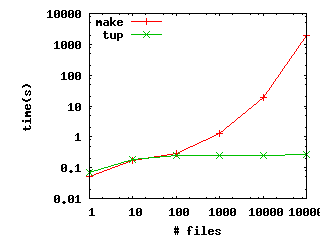
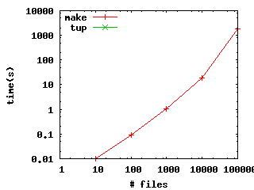

This page compares make to tup. This page is a little biased because tup is so fast. How fast? This one time a beam of light was flying through the vacuum of space at the speed of light and then tup went by and was like "Yo beam of light, you need a lift?" cuz tup was going so fast it thought the beam of light had a flat tire and was stuck. True story. Anyway, feel free to run your own comparisons if you don't believe me and my (true) story.
So for my simple test case I made N .c files (like 0.c, 1.c, 2.c ... N-1.c) and corresponding header files (0.h, 1.h, etc). I put them in a fairly logarithmic directory structure, with up to 10 .c/.h files per directory, and 5 sub-directories per directory. Each .c file includes its header, as well as the next 6 headers (so 1.c includes 1.h, 2.h, 3.h, ... 7.h). All C files in a directory get compiled into their corresponding object files, which are then linked into a program. The make case uses a single Makefile at the top level that describes all the programs and files to build. I believe this would be the fastest way possible. Another alternative would be a recursive make setup with a Makefile in each directory. That would be way slow, though, and not correct. For the tup case there is a Tupfile in each directory, as is the tup-convention. Tupvention.
I ran this test over different project sizes. For input size I use N=1, 10, 100, 1000, 10000, 100000. I didn't run a million cuz it would take forever to create a million files, and I value the life of my hard drive. Maybe I'll do that someday. Yeah that's right. I said maybe someday I will *kill* my hard drive, just for another data point. Is it right to value the pursuit of science over life? Even if it's something that does not ever truly live? That is a question that even tup cannot answer. So then I timed both make and tup based on: 1) how long it takes to build everything from scratch; 2) how long it takes to update when a single C file is changed; 3) how long it takes to update when a single header file is changed; and 4) how long it takes to do nothing.
The first test is fairly important - obviously we want the initial build to be as fast as possible. But, that's something you do once (being "initial" and all), and usually that's when you go get a snack or read Slashdot, so it's cool if it takes a little extra time. Here you can see tup takes a little extra time up front. The duo-logarithmic scale may be fairly deceiving, but since the input size is logarithmic that's the only way you get a useful graph. For some reason tup seems to get better with the larger initial input size. That's somewhat counter-intuitive to me. Anyway, you could expect tup to take somewhere between 5-30% longer initially, if my numbers are to be believed.
| Initial build |
|  |
The next few tests are all kinda the same. The second test is the usual case - if you're like me you usually change a single C file at a time and update (like add printf("wtf\n"); or something). Of course, if you're running a recursive make setup you could just cd to that directory and make it, and it would be fairly quick. But in case 3) you would have no idea which directories you'd have to cd to and run make, so how good is your little plan now? How good I say! And then test case 4) is just to show how awesome tup is. Here are those graphs:
| Single C file changed | Single H file changed | Nothing changed |
|  |  |  |
Again these graphs use a duo-logarithmic scale, so it may not be entirely evident at first glance by how much you've just been en-awesomed. Tup starts to get faster once you have somewhere between 10-100 files in your project. With 100k files, it takes make a half an hour to figure out which C file it needs to build. With tup the whole thing is done in a tenth of a second. The header file test is basically the same, only since in my test each header is included by 7 other files, the time to update goes up from the 1 to 10 file case, cuz it goes from building 1 C file to 7 C files.
Also, this is important, so it gets its own paragraph. Even with 100k files. Actually, 100k C files and 100k header files. So that's 200k files. Across I think 5k directories. When there's nothing to be done, tup takes 0 seconds to figure it out and quit. Granted I used 'time -p' which only prints out to hundredth-second accuracy (if you use regular time, I get like 0.004s, but then I'd have to convert minutes back to seconds, which would make graphing it more annoying, so I used time -p ;). I'll give you a minute to take in the awesome.
Now that you've taken it in, the astute among you may have wondered how long it takes to start the monitor to watch all those directories with those 200k files. Well that probably depends on your hard disk and all, but for me it took 18 seconds. Some of those files were probably still cached from creating them, though. Anyway...according to my calculations, 18 seconds is still decidedly less than 30 minutes, and you only have to spend those 18 seconds once. Until you reboot. So err, once per reboot-ish. Not that often, I guess. 30 minutes per update for make vs. 18 seconds per not that often for tup.